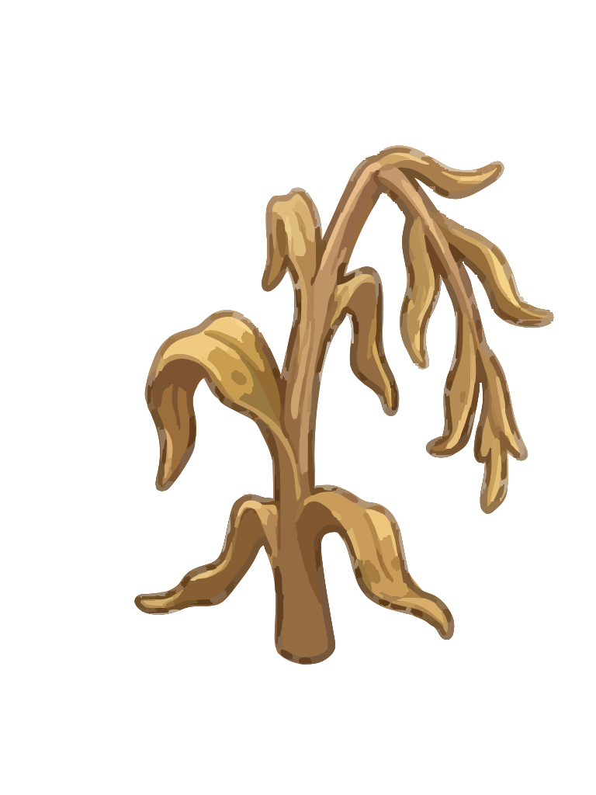
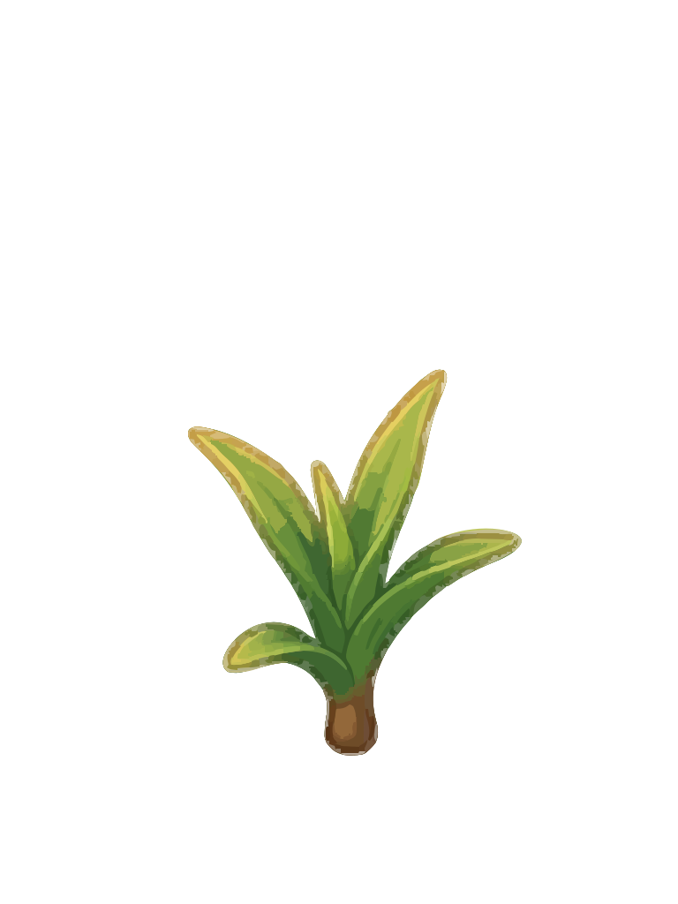
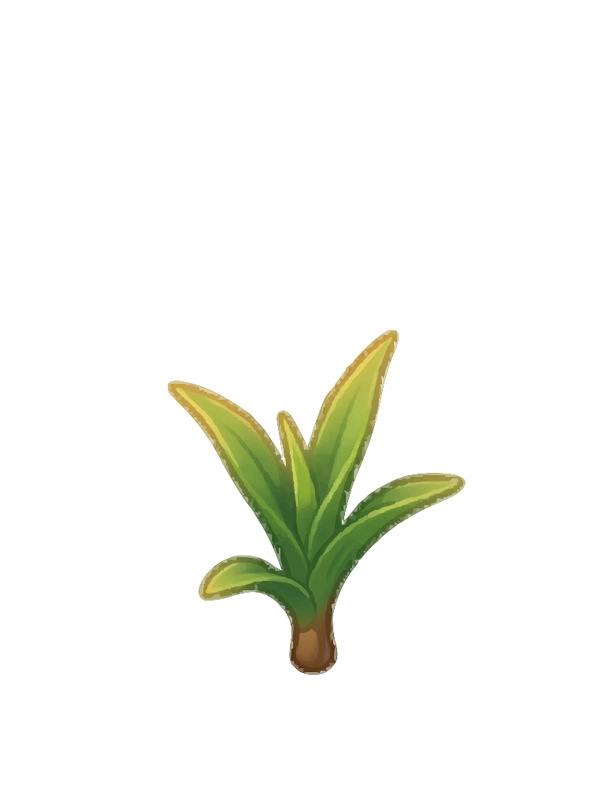
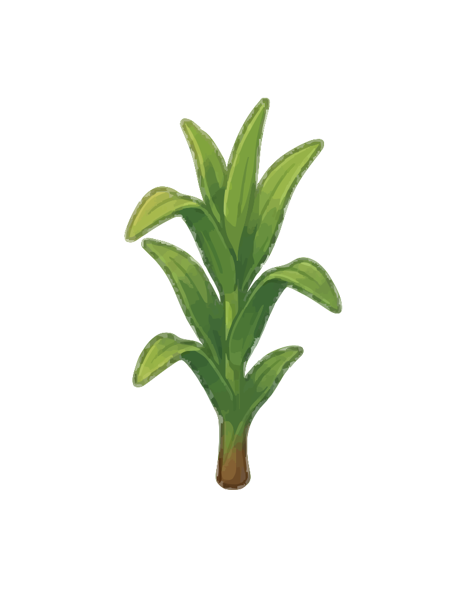
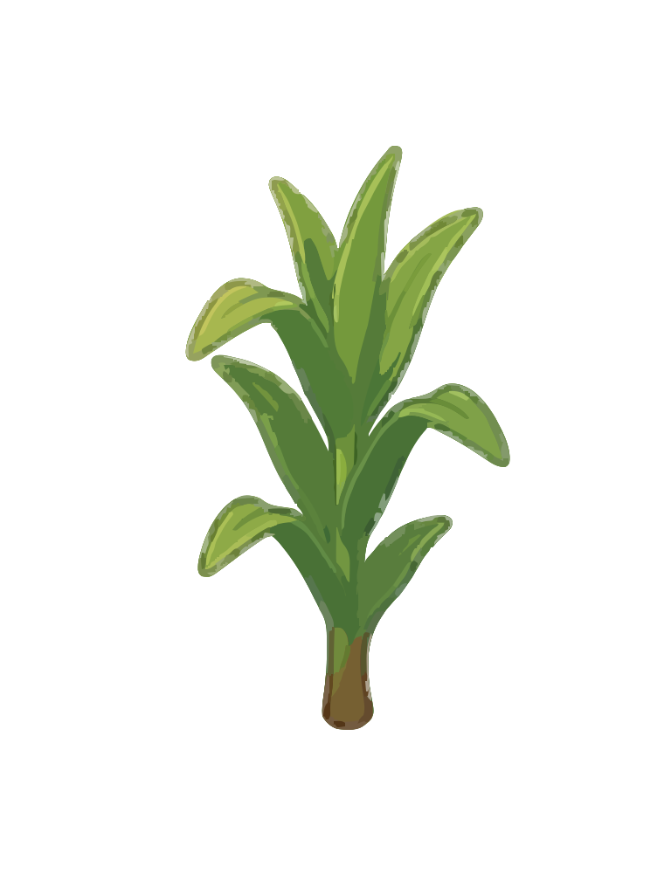
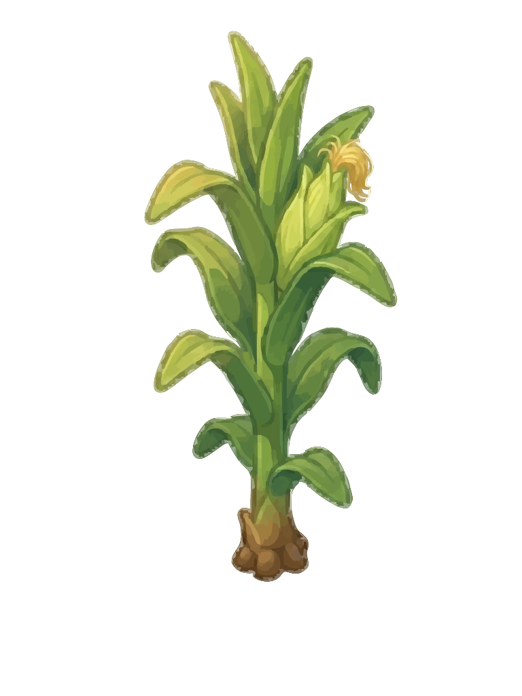
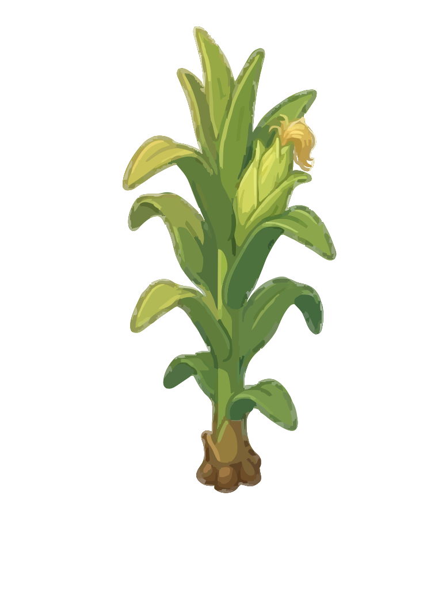
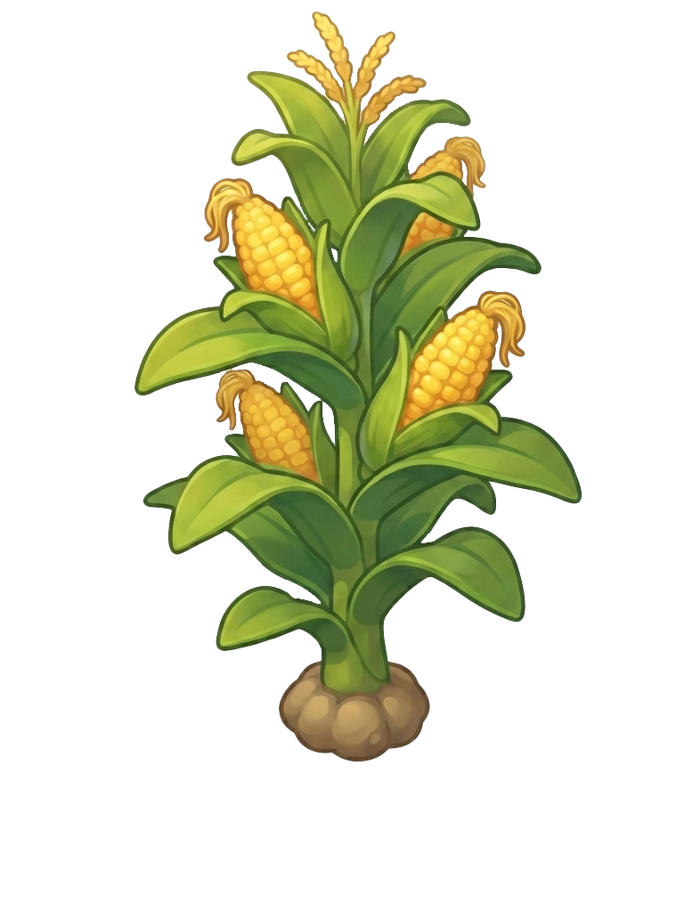
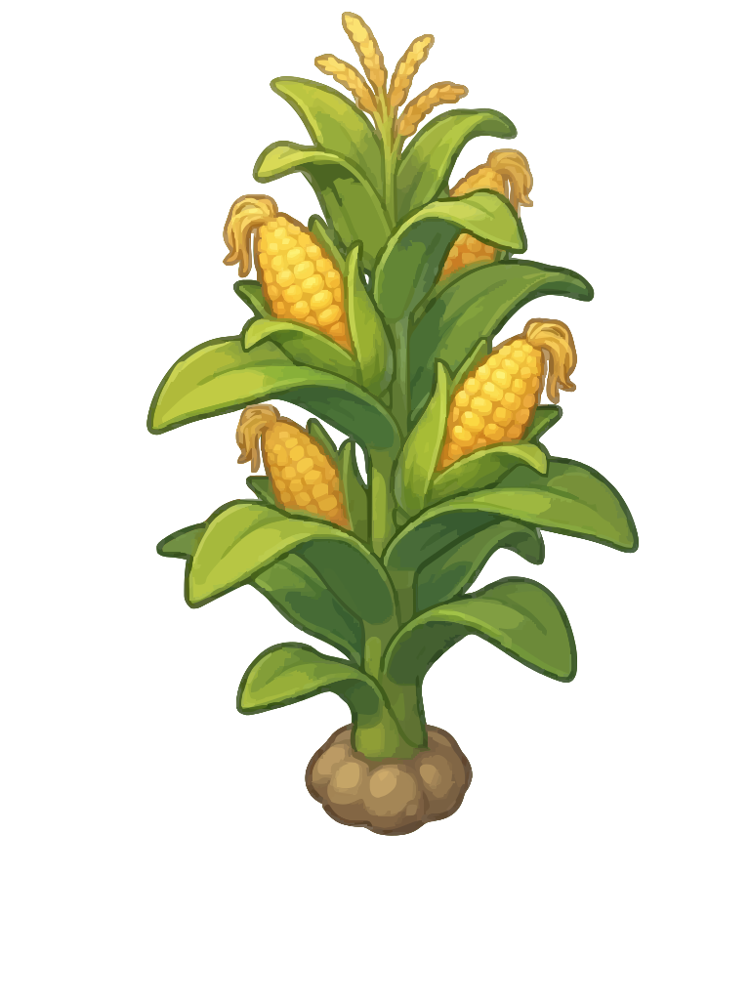
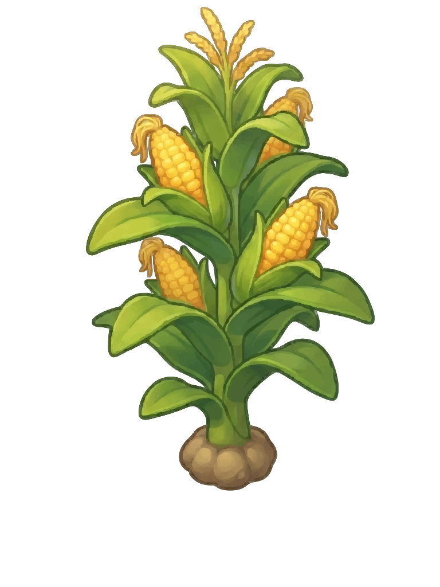

Source PNG
Use this as the visual reference. The accepted SVG should preserve silhouette, color identity, and crop anchor.
Review từng PNG trước khi chọn preset export. Không dùng một preset chung nếu ảnh/state khác nhau cho kết quả kém.
Use this as the visual reference. The accepted SVG should preserve silhouette, color identity, and crop anchor.
Raw: 565.1KB, paths 1134, colors 1112
Optimized: 318.9KB, paths 1134, colors 1112
Raw: 629.6KB, paths 1428, colors 1395
Optimized: 351.3KB, paths 1428, colors 1395
Raw: 1258.4KB, paths 3915, colors 3725
Optimized: 652KB, paths 3915, colors 3725

Raw: 241.8KB, paths 357, colors 357
Optimized: 145.2KB, paths 357, colors 357
Use this as the visual reference. The accepted SVG should preserve silhouette, color identity, and crop anchor.

Raw: 190.7KB, paths 334, colors 334
Optimized: 101.4KB, paths 334, colors 334
Raw: 208KB, paths 413, colors 412
Optimized: 110KB, paths 413, colors 412

Raw: 452.2KB, paths 1215, colors 1203
Optimized: 228.5KB, paths 1215, colors 1203
Raw: 47.8KB, paths 52, colors 52
Optimized: 28.5KB, paths 52, colors 52
Use this as the visual reference. The accepted SVG should preserve silhouette, color identity, and crop anchor.

Raw: 347.9KB, paths 602, colors 599
Optimized: 191.7KB, paths 601, colors 599
Raw: 376.6KB, paths 736, colors 732
Optimized: 206KB, paths 735, colors 732
Raw: 814.3KB, paths 2463, colors 2392
Optimized: 414.1KB, paths 2462, colors 2392

Raw: 146.3KB, paths 205, colors 204
Optimized: 83.8KB, paths 204, colors 204
Use this as the visual reference. The accepted SVG should preserve silhouette, color identity, and crop anchor.
Raw: 550.1KB, paths 1012, colors 1008
Optimized: 305.7KB, paths 1012, colors 1008

Raw: 605.1KB, paths 1265, colors 1261
Optimized: 332.5KB, paths 1265, colors 1261
Raw: 1272.8KB, paths 3942, colors 3879
Optimized: 649.6KB, paths 3942, colors 3879

Raw: 239.5KB, paths 352, colors 352
Optimized: 138.2KB, paths 352, colors 352

Use this as the visual reference. The accepted SVG should preserve silhouette, color identity, and crop anchor.
Raw: 739KB, paths 1429, colors 1422
Optimized: 429.9KB, paths 1429, colors 1422

Raw: 824.7KB, paths 1815, colors 1800
Optimized: 474.4KB, paths 1815, colors 1800

Raw: 1804.1KB, paths 5482, colors 5384
Optimized: 962.2KB, paths 5482, colors 5384
Raw: 355.4KB, paths 511, colors 509
Optimized: 215.1KB, paths 511, colors 509